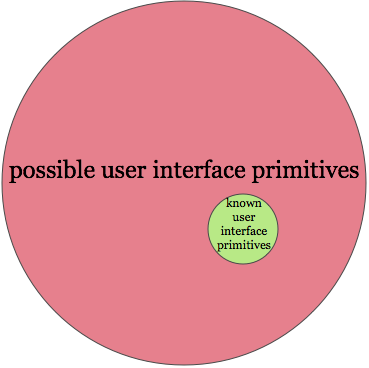
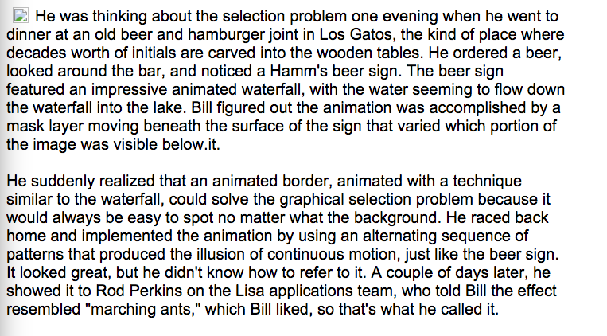

Rough and incomplete working notes, by Michael Nielsen. Thanks to John Workman for a conversation that made them a lot clearer. The notes were used for a presentation at the Recurse Center. Press “n” to advance forward through the presentation, and “p” to move back. Note that the scrolling was quickly hacked together to work with my machine configuration and screen, and hasn't been thoroughly tested.
In any field find the strangest thing and then explore it – John Wheeler
What are the strangest and most interesting user interfaces? What principles underly those interfaces?
Motivating hunches (which I'll come back to): we've discovered no more than an infinitesimal fraction of the most powerful user interface ideas; powerful new interface ideas help expand the range of thoughts we can think** See Media for Thinking the Unthinkable..
Natural question: what new interface ideas can we discover? How can we expand the range of thoughts we can think?
These are questions I'm very interested in, and puzzling over.
I don't have good answers. But I thought it might be fun to show some striking interfaces, and talk a bit about some things I've learned, and interesting questions.
Such a talk structure is a bit unusual.
Often a talk starts with a well-posed puzzle or mystery, then develops an answer, and wraps up in a satisfying conclusion that partially or completely resolves the mystery.
In this talk, my goal is fuzzier. I'm merely trying to explore and better understand some striking user interface ideas. The motivating puzzle – develop UI ideas that can expand the range of thoughts we can think – is so far in the background as to be barely visible. So you should view this as exploration and play more than as problem solving with a satisfying conclusion. Hopefully that'll occur in a future presentation!
Lots of books (and other resources) on UI design. Most take UI primitives as a relatively fixed set, and ask how to use them to build good interfaces. But the stance here is more that of: where do the primitives come from? How are they invented? How might we invent new ones?
We won't answer these questions. But it's where I'm coming from.
Invention of new UI primitives is important. New UI primitives – the hyperlink, the search box, the written word** I'm not going to define UI, nor to draw much of a distinction between static media, and interactive interfaces. I'm more interested in gathering data about powerful examples than in imposing a priori restrictions. – are often tremendously important vehicles for thought.
Braid provides several models allowing you to manipulate time.
The simplest model lets the player backtrack, a kind of continuous undo or version control.
In the follow excerpt, I show the player encountering two unexpected obstacles. In many games you would die. In Braid you die, but can then undo or rewind your actions, taking you back to an earlier game state. Then you can attempt the obstacle again, but with the advantage of knowing what to expect. Here's the excerpt:
Later parts of the game gradually give us more elaborate ways of manipulating time.
In the next excerpt, the player sees that they need a key to unlock the gate on the far right of the screen. They must get the key from the creature at the bottom of the pit. But how can they get out of the pit? Let's take a look:
Ahah! We learn that green sparkly things don't go backward in time. They continue forward in time, while everything else rewinds. This extends the previous model of time we had, in which everything was rewound.
In this excerpt we're actually using our control of time to solve otherwise insoluble puzzles. Indeed, each new model of time gives the game designer space to discover new puzzles.
Consider the following puzzle. We'd like to use the clouds as platforms to jump across to the cannon on the far right of the screen. But it's not possible because the spacing is wrong. However, we can use our new model of controlling time – green sparkly clouds always move forward in time! – to get the spacing between the clouds just right:
Braid continues in this way, with several more models of time control, and dozens of puzzles whose solution requires increasing virtuosity in using time control.
When you play Braid intensely, you start to incorporate the control of time as a primitive operation in your thinking. I found myself wanting to rewind in everyday life. And you become increasingly adept at reasoning about time control. The time control operations are incorporated into your mental lexicon.
In a similar way, people experiencing the Tetris effect compulsively imagine rotating real-world objects, and fitting them into slots in the environment.
Specific games are not (usually) durable parts of people's lives, and this effect rapidly fades.
But many user interface operations are internalized as part of our everyday thinking. For instance, everyone is used to clicking and dragging the mouse pointer to select part of a document. This seems simple and natural, but it is, of course, an operation that was invented (in several stages). For instance, here's how Bill Atkinson invented the “marching ants” which were introduced in Apple's Mac and Lisa systems, and are still used today in many selection tools:
Let's assume:
It's common to say technology is augmenting human cognition.
The usual examples are things like search or maps, which simplify problems that previously were quite difficult.
But I think there's a much more fundamental way of using technology to augment cognition.
We think of our minds as existing in a biological substrate.
But equally important as a substrate for thought are words, sketches, mathematical symbols, musical notes, and so. And these are technologies: they're things people have invented. By inventing new representations and ways of interacting with them, maybe we can change the way people think.
Another interesting UI is in the game Monument Valley.
(It's notable, by the way, that a lot of UI innovation happens in games.)
In the following, you're the white character. You're trying to push the button on the left. But you're blocked from getting there by a black crow. What do you do?
Solving this puzzle depends crucially on understanding and working within an unusual model of gravity. Indeed, that unusual model of gravity is what makes the puzzle possible.
Let's look at another example:
This example relies on well-known hacks of the human perceptual system.
Reality is 3d → 2d input device (eyes) → inverted by our brain to a 3d model.
There is no unique way of doing that inversion. We rely on cues from things like shadows etc. Because of this non-uniqueness, we can fool the brain into thinking that two points are simultaneously: (1) at the same height; and (2) at different heights.
To solve the puzzle, we must learn to reason (at least in a limited way) about such hacks of our perceptual system. It's notable that once we're up the stairs, the player never “climbs higher”, yet ends up “higher” in space. Figuring out how to do that is really the point of this puzzle.
Monument Valley was built using Unity's 3d game engine. I don't know how this worked – I don't think Unity is built to support impossible structures! I presume they used one-off hacks / kludges to get the desired physics, not a genuine model** Some circumstantial evidence: the actions you can take in the game are extremely constrained. I suspect this isn't an accident, but it is a deliberate design choice to make the other kludges possible. .
Could you build a game engine that wasn't 2d or 3d, as usually construed, but rather systematically incorporated these kinds of hacks of our perceptual system? What data structures would you use to model such systems?
Again, we see the same pattern: problems in 4-dimensional geometry become sources of game puzzles.
A general pattern is that deep insights from outside computing can often be reified as interesting UI.
(Many of the ideas behind modern user interfaces were invented by Alan Kay's group at Xerox PARC in the 1970s. It's striking that Kay's recommended reading is mostly books outside computing. In published interviews, Kay has talked about how many of the ideas in those books inspired interface ideas.)
All are, loosely speaking, changes to the laws of physics. But so what?
One (relatively) consistent rule change that can be applied uniformly to many different contexts.
Lots of UI is only locally applicable. We think of tools – “change this font!” – which are applied locally. But in these cases we have a consistent globally applied rule.
Tentatively: prefer “always on” UI to UI tools that have to be manually applied.
A benefit of always-on UI is that it becomes a condition in which we live. The rules are simple and fixed, and we're just trying to understand new consequences of those rules.
This seems to be enormous fun for human beings, for reasons I don't entirely understand.
It's also a contrast to the approach used in much UI: largely static conditions, with tools to be explicitly applied.
The challenge is finding global rules which mean that simple choices by the user lead to interesting emergent structure. I don't understand very well how to find such global rules.
Look at a much wider array of examples (text, programming languages, standard iconography, dance and musical notation, more games, traditional desktop apps, web apps, mobile apps, VR, AR, brain-computer interfaces, etc).
What are the the most interesting and unusual interfaces?
Distill principles and look for commonalities systematically.
Start to ask: what kind of problems will lead to powerful new UI primitives? What new UI primitives can we invent? What are good sources of UI primitives outside of computing?
EOF